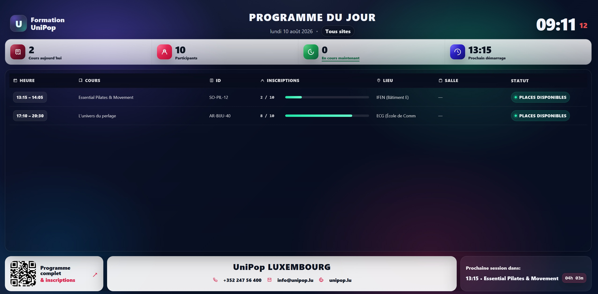
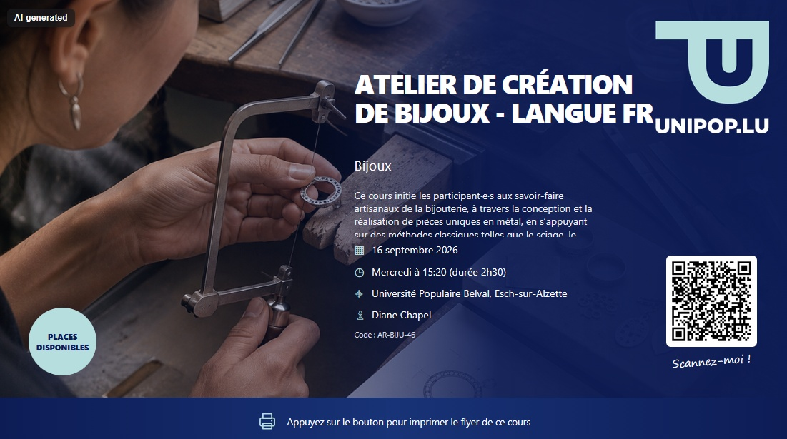
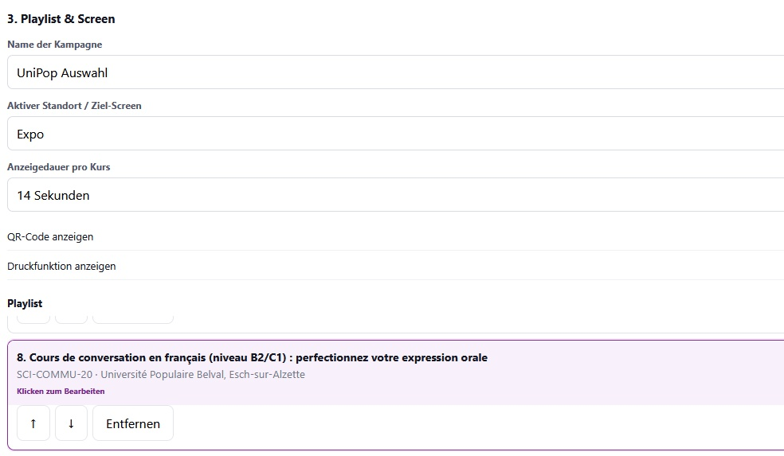
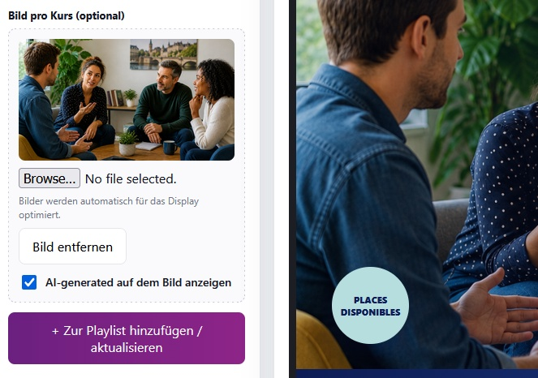
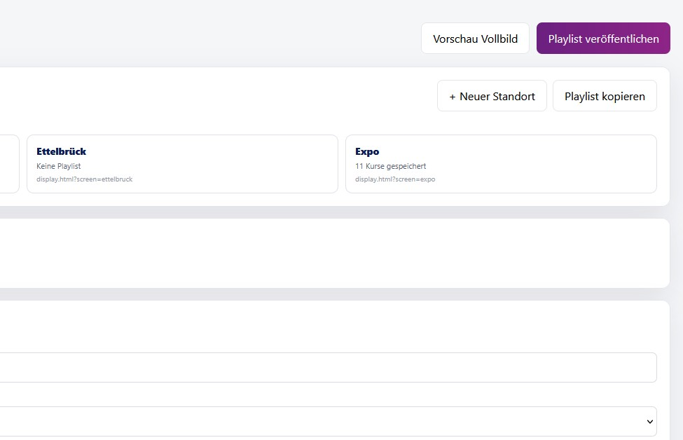
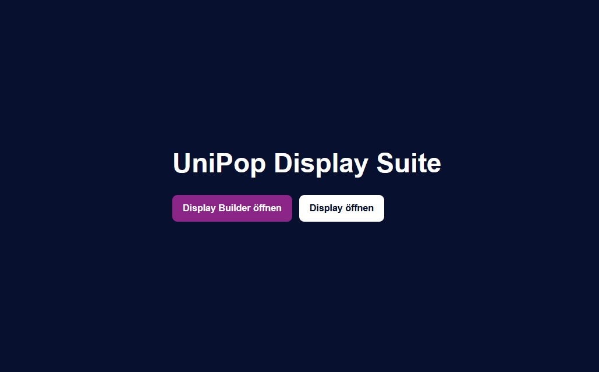

UniPop Signage
A browser-based digital signage display that automatically reads UniPop course data and presents the current courses of the day.
Overview
UniPop Signage was created as an automated way to display the current UniPop courses on a dedicated screen.
Instead of manually preparing a daily slide or presentation, the application reads the UniPop course data directly from a JSON source and automatically determines which courses are taking place on the current day.
The result is a simple and reliable display that always shows the relevant daily course information without requiring continuous manual updates.
Project details
The main goal of the project was to automate a task that would otherwise require daily preparation. UniPop course information already existed as structured data, so the signage application was designed to reuse this source directly.
When the page loads, the application reads the JSON course data, compares the course dates with the current date and filters the dataset so that only the courses taking place that day remain.
The relevant course information is then formatted automatically for a fullscreen display. This allows the screen to stay current even when the course programme changes, without manually editing the presentation itself.
The project was an early step toward more data-driven UniPop display systems and demonstrated how the existing course database could be reused for automated communication tools.
JSON course data
The display reads structured UniPop course information directly from a JSON data source.
Automatic date filtering
The application compares course dates with the current date and selects only the courses scheduled for that day.
No daily editing
Because the content is generated from the course data, there is no need to manually rebuild the display every day.
Dynamic course information
Course titles, times, locations and other available details can be presented automatically from the data source.
Fullscreen display
The interface was designed for continuous presentation on a dedicated information screen.
Data-driven workflow
The project showed how a central course data source could be reused for automated UniPop communication.
Technology
UniPop Signage is built as a lightweight web application using HTML, CSS and JavaScript.
JavaScript loads the structured JSON course data, processes the individual course entries and compares their dates with the current day. The resulting courses are then inserted dynamically into the display interface.
Because the application runs entirely in the browser, it does not require a traditional desktop application or manual content preparation. Updating the underlying course data is sufficient for the display to reflect the latest available information.
Media & demo
The screenshots below show the data-driven workflow behind the signage system and the resulting daily course display.
The examples can include the JSON course source, different daily course selections, individual course layouts and the final fullscreen display running with automatically generated content.





